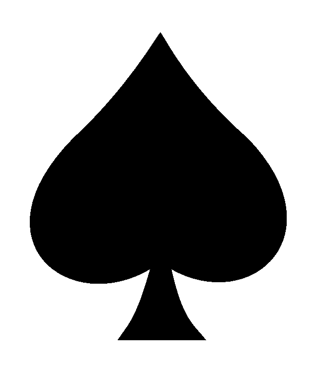
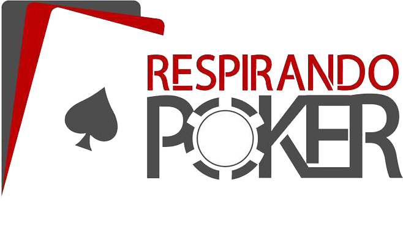
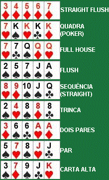

Com este tutorial você aprenderá, as regras básicas e objetivos do jogo de Poker.
Regras do Poker
Todos os jogos de poker começam com alguma aposta obrigatória, pela qual os outros adversários de poker competem. No 7-Card Stud,
existem duas apostas obrigatórias, uma inicial e um 'bring-in'. Em outros jogos, as apostas obrigatórias são um small blind e um big
blind (e em alguns casos um ante). Em qualquer jogo de poker básico, os jogadores apostam estrategicamente, utilizando um número de
ações disponíveis. As ações são:
1. PASSO - Se não houver aposta na rodada atual de apostas, um jogador pode passar a vez. O ato de passar transfere a possibilidade
de ação à pessoa imediatamente próxima ao jogador (no sentido horário). Passar não implica uma renúncia ao pote, mas apenas ao direito
presente de apostar. Se todos os jogadores ativos passarem durante uma rodada de apostas, a rodada é considerada completa.
2. APOSTO - Se ainda não houver aposta alguma na rodada de apostas atual, um jogador pode apostar. Se um jogador apostar, o jogador
adjacente (no sentido horário), bem como quaisquer jogadores subseqüentes poderão desistir, aumentar ou pagar.
3. DESISTO - Ao desistir, você renuncia a qualquer interesse no pote. Um jogador que desiste não pode mais apostar qualquer quantia
durante a presente mão do jogo.
4. PAGO - Se tiver havido uma aposta na rodada atual, um jogador poderá pagar. Ao pagar, o jogador igualará a aposta atual do(s) seu(s) adversário(s).
5. AUMENTO - Se tiver havido uma aposta na rodada atual, um jogador poderá aumentar. Ao aumentar, o jogador de poker deverá não só igualar
a aposta atual, mas acrescentar um tanto mais depois. Todos os jogadores subseqüentes deverão pagar ou aumentar ainda mais ('re-raise'), de forma a
manifestar o seu interesse no pote.

Ranking do Poker
Straight Flush: Cinco cartas em seqüência, do mesmo naipe.
Na eventualidade de um empate: O valor mais alto no topo da seqüência ganha.
Quadra: Quatro cartas de valor idêntico e uma carta lateral.
Na eventualidade de um empate: A quadra mais alta ganha. Nos jogos com cartas comunitárias, em que os jogadores têm a mesma quadra, a quinta carta lateral mais alta (a "kicker") ganha.
Full House: Três cartas de valor idêntico (trinca) e duas cartas de valor diferente e compatível.
Na eventualidade de um empate: A trinca mais alta ganha o pote. Nos jogos de cartas de comunidade em que os jogadores têm a mesma trinca, o valor mais alto de um par ganha.
Flush(Cor): Cinco cartas do mesmo naipe.
Na eventualidade de um empate: Ganha o jogador com a carta com maior valor. Se necessário, a segunda, terceira, quarta e quinta cartas mais altas podem ser utilizadas para resolver o empate.
Straight(Seqüencia): Cinco cartas em seqüência.
Na eventualidade de um empate: A carta com valor mais alto no topo da seqüência ganha.
Nota: o Ás pode ser utilizado na parte superior ou inferior da seqüência e é a única carta que pode agir desta forma.
Trinca: Três cartas de valor idêntico e duas cartas laterais não relacionadas
Na eventualidade de um empate: A trinca mais alta ganha. Nos jogos com cartas comunitárias, em que os jogadores têm a mesma trinca, a carta lateral mais alta ou, se necessário, a segunda carta mais alta ganha.

Ranking do Poker
Dois pares: Duas cartas de valor idêntico, outras duas cartas de outro valor idêntico entre si (mas diferente do valor das duas primeiras cartas) e uma carta lateral.
Na eventualidade de um empate: O par mais alto ganha. Se os jogadores tiverem um par de idêntico valor, o segundo par mais alto ganha. Se ambos os jogadores tiverem pares idênticos, a carta lateral mais alta ganha.
Um par: Duas cartas de valor idêntico e três cartas laterais não relacionadas.
Na eventualidade de um empate: O par mais alto ganha. Se os jogadores possuírem o mesmo par, a carta lateral mais alta ganha e, se necessário, a segunda e terceira cartas mais altas podem ser utilizadas para resolver o empate.
Carta alta: Qualquer mão que não se qualifique numa categoria listada acima.
Na eventualidade de um empate: A carta mais alta ganha e, se necessário, a segunda, terceira e quarta mais altas e a carta mais baixa podem ser utilizadas para resolver o empate.
